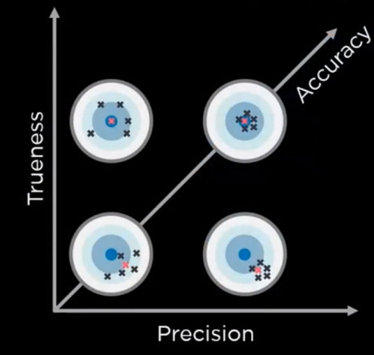

评估精度
相机精度
精度 代表了 真实度 与 准确度 的综合计量。 高 精度 代表了 真实度 与 准确度 同时达到了理想的状态：物体点云的质量高、噪点低、且能准确呈现物体表面。同时物体在点云中的位置与物体在实际空间中的位置的偏差低。 而我们一般说的相机 精度 ，通常说的其实是相机的 真实度 。
- 相机真实度会受以下要素的影响：
3D相机硬件和光学质量
相机校准的质量
物体在校准视体的位置
相机温度
相机老化
物理撞击，震动和压力
什么是真实度(Trueness)
相机的真实度反应在相机点云中的物体与实际物体在空间中位置的误差。真实度决定了抓取过程是否能够在视体里的所有位置，时间，成功抓取物体。
相机的真实度在相机对焦点中心最高，并随着物体距离焦点的距离增加而降低。物体在相机视野边界的位置偏差就比在相机焦点中的误差要高。
距离的增加包括x,y轴，以及深度(z)轴。其中x,y轴相对深度轴的影响稍小(x,y轴误差<0.1%)，深度轴的影响相对稍大(z轴误差<0.2%)。
什么是准确度(Precision)
精度反映了点云的噪声水平。 如果点云有噪音，精度误差会很高，这可能是由以下因素造成的：
低对比度
由物体运动引起的波纹状误差
曝光过度引起的波纹状错误
DaoAI相机的精确度
DaoAI相机提供0.2%的精度。 其中X、Y轴精度<0.1%，Z轴偏移精度误差<0.2%。 这意味着，在不考虑其他因素的情况下，在100毫米的捕捉距离，相机的精度误差最多为0.2毫米。 同样地，在1000毫米的拍摄距离上，相机的精度误差将最多为2毫米。
如何验证相机的真实性
摄像机的真实性可能会受到物理冲击、温度和使用时间的影响。 因此，验证你的相机的真实性对于获得成功的采摘是很重要的。 当相机的真实性大于可接受的范围（< 0.2%），那么相机将需要再次校准。
回顾一下，相机的真实性是指捕获的物体位置和实际物体位置的误差。
为了验证这个误差，我们可以使用一个已知大小的物体，例如校准板：两个圆圈之间的距离是已知的。 我们可以将摄像机拍摄的距离与我们知道的实际距离进行比较。

例如，校准板上有15个圆圈，每一个圆圈与另一个圆圈的距离是24毫米，也就是说，这一行的距离应该是336。 假设这个距离在相机中测量为335，那么相机的真实性可以计算为（336.5-335）/336 * 100% = 0.15%。
如果你安装了 DaoAI Vision Studio，你可以使用校准节点的预视测量模式来验证摄像机的真实性。